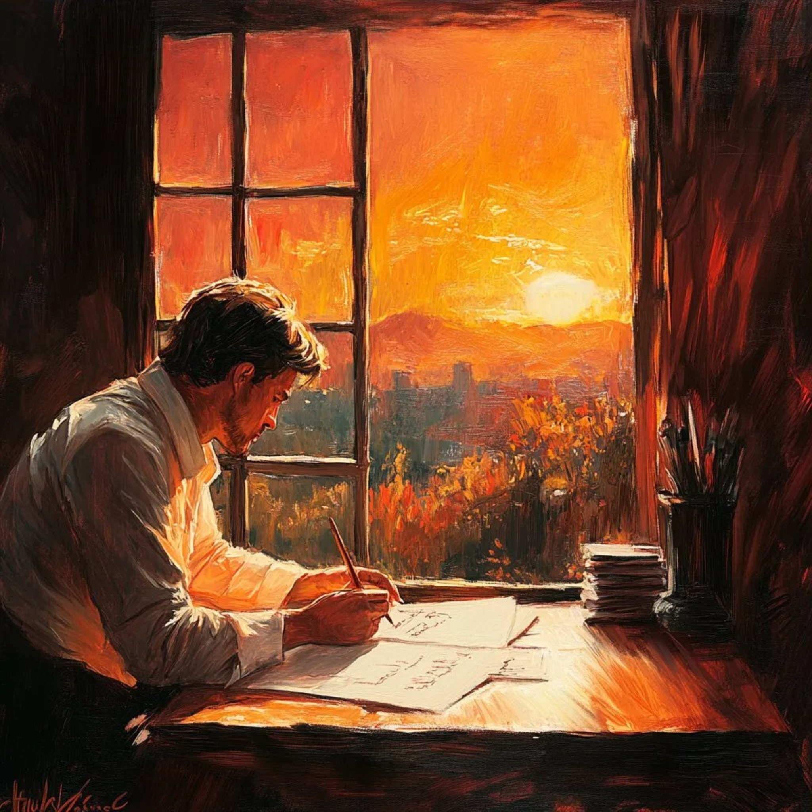

Идея
Красивое пространство для музыки и итальянского языка
Этот сайт задуман как цельное художественное переживание. Можно слушать песни, читать тексты как стихи, всматриваться в иллюстрации и запоминать язык через образ, ритм и эмоцию.
Музыкальный мир для учеников итальянского
Слушай, чувствуй и пой. У каждой песни здесь свой образ, свой свет и своя эмоциональная сцена.
Когда меняется песня, меняется и атмосфера: дождь, тайна, весна, признание, память.
Альбом
Нажми на любую песню: изображение, описание, цвета и текст обновятся сразу.
Текст
Идея
Этот сайт задуман как цельное художественное переживание. Можно слушать песни, читать тексты как стихи, всматриваться в иллюстрации и запоминать язык через образ, ритм и эмоцию.

Творческий импульс
Дополнительная визуальная сцена напоминает, что песня часто начинается с внутреннего света, памяти, мечты или одного сильного образа.